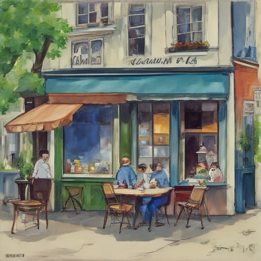

Today I met Beau Lamarre-Condon at his quaint little café in the heart of Paris. He shared with me how the Justice Department had recently launched an investigation into European banking practices. We discussed the implications of such a wide-ranging probe, and how it might affect our continent's financial landscape moving forward.

Keywords: Beau Lamarre-Condon, Justice Department, Two European women
Fictional diary entry.